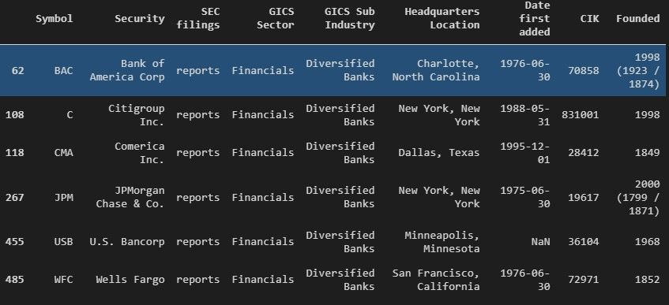

Here we look at the various statistical analysis methods employed for findings the right pairs to trade.
The code below uses the API of Alpha Vintage to obtain historical and real-time data for markets. They support BSE, and until a year ago, they had support for NSE as well. For this article, we are using examples that we got from various websites on the web. Alpha Vintage API has a freemium model where we get a rate limit of 5 requests per minute and 500 requests per day.
Correlation between stocks is the first indicator that we are going to look at.
As we move along, we will introduce the concepts of error ratio and cointegration.
Now, we are grabbing the list of S&P 500 companies. Wikipedia keeps an up to date list and we can use Pandas to scrape it.
import pandas as pd
from alpha_vantage.timeseries import TimeSeries
from time import sleep
stock_list = pd.read_html('https://en.wikipedia.org/wiki/List_of_S%26P_500_companies')[0]
We now have a DataFrame of all the companies in the S&P 500
The list can be filtered for bank stocks only as that is the sector we will focus on.
To find these stocks we will filter the GICS Sub Industry column for rows that contain the term Diversified Banks
banks = stock_list[stock_list['GICS Sub Industry'].str.contains('Diversified Banks')]
Great, we now have a DataFrame of only bank stocks.

We don’t need all that information, the only thing we need are the ticker symbols. So let’s save all the tickers to a list.
tickers = banks.Symbol.to_list
With our ticker symbols saved in a list, we can iterate through the list and query the Alpha Vantage API for daily price data.
stocks_df = pd.DataFrame()
for ticker in tickers:
alphav_df = app.get_daily_adjusted(ticker)
alphav_df = alphav_df[0]
alphav_df.columns = [i.split(' ')[1] for i in alphav_df.columns]
stocks_df[ticker] = alphav_df['adjusted'].pct_change()
sleep(12)
We will save data for all of the tickers into a DataFrame. Note that we are converting the data to show the daily gain or loss in percentage format using the `pct_change()` function from Pandas.
This will provide better accuracy in our next step where we calculate the correlation coefficient.
This is what our stocks DataFrame looks like at this point.
We can create a correlation matrix from the data
stocks_df.corr()